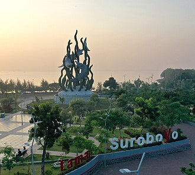

Deskripsi
Kota Surabaya (bahasa Jawa: Hanacaraka: ꦏꦸꦛꦯꦸꦫꦨꦪ, Pegon: كوڟا سورابايا translit. Kuthå Suråbåyå; pengucapan bahasa Jawa: [kuʈɔ surɔˈbɔjɔ]; pelafalan dalam bahasa Indonesia: [suraˈbaja] ⓘ) adalah ibu kota Provinsi Jawa Timur yang menjadi pusat pemerintahan dan perekonomian sekaligus kota terbesar di provinsi tersebut. Surabaya juga merupakan sebuah kota yang terletak di Provinsi Jawa Timur, Indonesia. Surabaya merupakan kota terbesar kedua di Indonesia setelah Jakarta[a].
Surabaya memiliki luas sekitar ±335,28 km², dan 3.000.076 jiwa penduduk pada pertengahan tahun 2023.[10] Daerah megalopolitan Surabaya yang berpenduduk sekitar 10 juta jiwa, adalah kawasan metropolitan terbesar kedua di Indonesia setelah Jabodetabek. Surabaya dan wilayah Gerbangkertosusila dilayani oleh sebuah bandar udara, yakni Bandar Udara Internasional Juanda di Kabupaten Sidoarjo yang berada 20 km di sebelah selatan kota, serta dua pelabuhan, yakni Pelabuhan Tanjung Perak dan Pelabuhan Ujung.
Tabel Jumlah Penduduk Kota Surabaya
| No | Jenis Kelamin | Jumlah |
|---|---|---|
| 1 | Laki-laki | 1.431.041 |
| 2 | Perempuan | 1.456.182 |
| 3 | Total | 2.887.223 |
Kecamatan di Kota Surabaya
-
Surabaya Pusat:
- Tegalsari
- Simokerto
- Genteng
- Bubutan
- Gubeng
- Gunung Anyar
- Sukolilo
- Tambaksari
- Mulyorejo
- Rungkut
- Tenggilis Mejoyo
- Benowo
- Asemrowo
- Sukomanunggal
- Tandes
- Pakal
- Lakarsantri
- Sambikerep
- Tegalsari
- Gayungan
- Wiyung
- Karang Pilang
- Jambangan
- Siwalankerto
- Wonocolo
- Semampir
- Pabean Cantikan
- Krembangan
- Kenjeran
Surabaya Timur:
Surabaya Barat:
Surabaya Selatan:
Surabaya Utara:
Website Pemerintah Kota Surabaya
